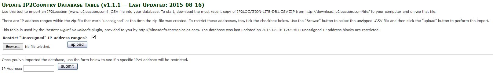

Restrict Digital Downloads (RDD)
Version 1.1.0 by lat9
Current support thread at via the Zen Cart forums: http://www.zen-cart.com/showthread.php?215524-Restrict-Digital-Downloads-Support-Thread. This software is provided for your use under the GNU General Public License v2.0.
What it does
You've got a Zen Cart® store that currently delivers digital downloads to your customers and you'd like to restrict the delivery of those automatic downloads to specific countries. This plugin (RDD) inspects the IPv4 address of a customer that "arrives" at your store, determines if their IP address is associated with a restricted country and, if so, disables any digital-download product options.
Note: If a customer visits your store using an IPv6 connection, they will also be restricted because there is no look-up available to determine their location.
RDD uses the free LITE IP-Country database provided by ip2location.com that provides "> 98% accuracy". The company also has a paid version of the database that has "high data accuracy, more records & customer support". The free version's license agreement requires that your store include text attributing the use of their database; RDD includes this text in your store's legal and copyright section.
The Details
Database Changes
The first time you access a page in your Zen Cart admin after installing the admin-level files for this plugin, an initialization script runs that creates the ip2country database table required by RDD. This table contains three (3) fields for each IP-address range:
- ip_from … the integer value of the starting IPv4 address for the range.
- ip_to … the integer value of the ending IPv4 address for the range.
- country_code … the 2-character ISO code for the country associated with the IPv4 address range. If the address range is not currently assigned to a country, the value is '- '.
Admin-Level Changes
The RDD admin-level initialization script also enables the Tools->Update IP2Country page, with which you'll import an IP-Country .csv file. Simply follow the instructions on the screen, copying and pasting the links to access the download area.

When the "IP-Country" information is imported, the tool creates a database entry only if the 2-character ISO country-code for the associated .CSV entry is associated with a country that you wish to restrict or if an IP-address range is unassigned to a country. You control this list by editing the file /YOUR_ADMIN/includes/extra_datafiles/ip2country_file_database_admin_names.php and changing the value for the IP2COUNTRY_RESTRICTED_COUNTRIES definition. That value is a packed, comma-separated list that defaults to:
define ('IP2COUNTRY_RESTRICTED_COUNTRIES', 'AT,BE,BG,HR,CY,CZ,DK,EE,FI,FR,DE,GR,HU,IE,IT,LV,LT,LU,MT,NL,PL,PT,RO,SK,SI,ES,SE,GB');
Note: The default import will increase the size of your database by approximately 1.5M.
Once you've imported the ip2country information, you can use the form at the bottom of the page to display information about a specific IP address. Enter the IPv4 address and click the "Submit" button, a message will be displayed indicating one of:
- The IP address was not a valid IPv4 address.
- The IP address is not restricted in the database.
- The IP address is restricted in the database.
Store-Side Changes
Within your store's processing, RDD comes into play, by default, on the document_general_info, document_product_info, product_info and product_music_info pages. If the current customer's IP address is "restricted" and the current product includes a digital-download option, then a message is displayed to the customer and all digital-download options are disabled.
The image on the left (or top, depending on the width of your display) illustrates the plugin's behavior for a product with a download option on entry to the product's information page. The other image shows the plugin's response to a "crafty" customer who disables javascript so that the download selection is re-enabled. Essentially, the plugin prevents the digital-download option (either radio-button, check-box or drop-down menu) for any product to be selected and placed into a customer's cart if the customer's IP address is restricted.
Note: RDD uses a jQuery script to disable any download-related product options; the minimum version required is v1.7.0. If no other version of jQuery is detected, the file /includes/templates/YOUR_TEMPLATE/jscript/jscript_jquery_cdn.js will load jQuery v1.11.1.
Installation
- Backup both your Zen Cart installation and database — this plugin will will modify both.
- Double-check the backup you just created. Better safe than sorry!
- Unzip the plugin's distribution zip-file into a temporary directory. Rename the "YOUR_TEMPLATE" directory to match your custom template's name:
- /includes/templates/YOUR_TEMPLATE
and the "YOUR_ADMIN" directory to match your renamed admin folder.
- Your best approach for installing any new software is to use a local copy for your testing before deploying the changes to your live store. If you must install this directly on your live store, put your store into Maintenance Mode using your admin's Configuration->Maintenance Mode->Down for Maintenance setting, first. You'll then either copy the files to your local installation or use your FTP/SFTP program to copy the files to your hosted store.
- Check to see if your installation already has the following template-override file. If the file is not present, copy the file from the template_default directory; otherwise, use file-merging software to merge this plugin's changes into the file prior to copying:
- /includes/templates/YOUR_TEMPLATE/common/tpl_footer.php
- Sign into your Zen Cart admin.
- Copy the admin-level files to your store:
- /YOUR_ADMIN/tools_update_ip2country.php
- /YOUR_ADMIN/includes/auto_loaders/config.ip2country.php
- /YOUR_ADMIN/includes/extra_datafiles/ip2country_file_database_admin_names.php
- /YOUR_ADMIN/includes/init_includes/init_ip2country.php
- /YOUR_ADMIN/includes/languages/english/tools_update_ip2country.php
- /YOUR_ADMIN/includes/languages/english/extra_definitions/ip2country_extra_definitions.php
- Click the Admin Home link in your Zen Cart admin's header. This causes the plugin's installation script to run, which creates the
ip2country database table required by the store-side processing.
- Copy the store-side files, now that the database table has been created:
- /includes/auto_loaders/config.restrict_digital_downloads.php
- /includes/extra_cart_actions/restrict_digital_downloads.php
- /includes/extra_datafiles/restrict_digital_downloads_database_names.php
- /includes/init_includes/init_restrict_digital_downloads.php
- /includes/languages/english/extra_definitions/restrict_digital_downloads_extra_definitions.php
- /includes/templates/YOUR_TEMPLATE/common/tpl_footer.php
- /includes/templates/YOUR_TEMPLATE/document_general_info/extra_main_template_vars/restrict_digital_downloads.php
- /includes/templates/YOUR_TEMPLATE/document_product_info/extra_main_template_vars/restrict_digital_downloads.php
- /includes/templates/YOUR_TEMPLATE/jscript/jscript_jquery_cdn.js
- /includes/templates/YOUR_TEMPLATE/product_info/extra_main_template_vars/restrict_digital_downloads.php
- /includes/templates/YOUR_TEMPLATE/product_music_info/extra_main_template_vars/restrict_digital_downloads.php
- Import the "IP-Country" information into your database, following the instructions given here.
- Take your store out of "Maintenance Mode".
Version History:
- v1.0.0, 2014-12-09, Initial release.
- v1.0.1, 2014-12-17:
- BUGFIX: Wrong parameter count on message (/YOUR_ADMIN/includes/languages/english/tools_update_ip2country.php)
- BUGFIX: Single-value options were not being restricted:
- /includes/extra_cart_actions/restrict_digital_downloads.php
- /includes/templates/YOUR_TEMPLATE/{product_type}/extra_main_template_vars/restrict_digital_downloads.php
- Included support for document_general_info and document_product_info product types:
- /includes/templates/YOUR_TEMPLATE/document_general_info/extra_main_template_vars/restrict_digital_downloads.php
- /includes/templates/YOUR_TEMPLATE/document_product_info/extra_main_template_vars/restrict_digital_downloads.php
- Updated version to v1.0.1:
- /YOUR_ADMIN/includes/init_includes/init_ip2country.php
- v1.0.2, 2014-12-28:
- BUGFIX: All IP addresses are restricted.
- BUGFIX: Restriction incorrectly applied to free digital downloads.
- Updated version to v1.0.2.
- The following files were changed:
- /includes/init_includes/init_restrict_digital_downloads.php
- /includes/extra_cart_actions/restrict_digital_downloads.php
- /includes/templates/YOUR_TEMPLATE/document_general_info/extra_main_template_vars/restrict_digital_downloads.php
- /includes/templates/YOUR_TEMPLATE/document_product_info/extra_main_template_vars/restrict_digital_downloads.php
- /includes/templates/YOUR_TEMPLATE/product_info/extra_main_template_vars/restrict_digital_downloads.php
- /includes/templates/YOUR_TEMPLATE/product_music_info/extra_main_template_vars/restrict_digital_downloads.php
- /YOUR_ADMIN/includes/init_includes/init_ip2country.php
- v1.1.0, 2015-04-06:
- CHANGE: Add ability to check an IP address within the admin tool.
- BUGFIX: If the digital download is the default selection for a radio-button option, no button was selected when RDD is active.
- The following files were changed:
- /includes/languages/english/extra_definitions/restrict_digital_downloads_extra_definitions.php
- /includes/templates/YOUR_TEMPLATE/document_general_info/extra_main_template_vars/restrict_digital_downloads.php
- /includes/templates/YOUR_TEMPLATE/document_product_info/extra_main_template_vars/restrict_digital_downloads.php
- /includes/templates/YOUR_TEMPLATE/product_info/extra_main_template_vars/restrict_digital_downloads.php
- /includes/templates/YOUR_TEMPLATE/product_music_info/extra_main_template_vars/restrict_digital_downloads.php
- /YOUR_ADMIN/tools_update_ip2country.php
- /YOUR_ADMIN/includes/init_includes/init_ip2country.php
- /YOUR_ADMIN/includes/languages/english/tools_update_ip2country.php
Un-install
Delete the new catalog and admin files that were previously copied and then run the uninstall_rdd.sql file that comes with this plugin.